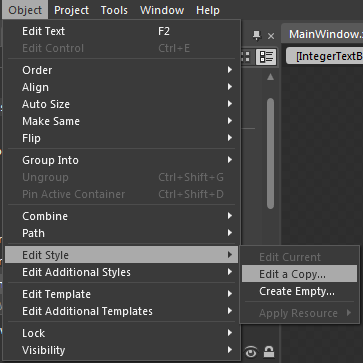
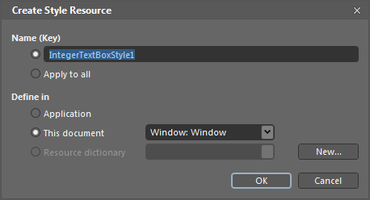
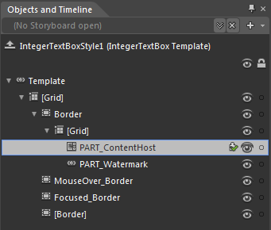
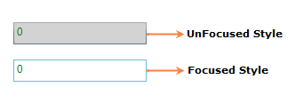

You can edit the IntegerTextBox Template to give a nice look and feel by using Expression Blend.
The steps to edit the IntegerTextBox Template by using Expression Blend are as follows:
1. Create a simple WPF application in Expression Blend.
2. Drag and drop the IntegerTextBox into the application from the Assets tab.

Figure 637: Expression Blend – Design View
3. After creating the IntegerTextBox, select the IntegerTextBox and navigate to Object -> Edit Style -> Edit a Copy, to edit the Template of the IntegerTextBox.

Figure 638: Editing Template
Another way to edit the Template is as follows:
4. In Object and Timeline, right-click the IntegerTextBox control and select the Edit Template option, as displayed below.

Figure 639: Editing Template
This will open a dialog (below) where you can give your style a name and define exactly where you’d like to store it.

Figure 640: Create Style Resource
The result of these steps is an XAML, which is placed within your application. This XAML represents the default style for the Integer Textbox.
|
<syncfusion:IntegerTextBox Width="150" Height="25" VerticalAlignment="Top" Style="{StaticResource IntegerTextBoxStyle1}"/> |
All template items can now be found in the Objects and Timeline window.

Figure 641: Objects and Timeline
Now you can replace the existing Template setter and Triggers with your own creation. In the Triggers tab you can select the Trigger and customize it as you want.

Figure 642: Triggers
Here is a simple example to customize the UnFocused state of the IntegerTextBox:
|
<Trigger Property="IsFocused" Value="False"> <Setter Property="Background" TargetName="Border" Value="LightGray"/> </Trigger> |
When a control lost the Focus, the Background color of the IntegerTextBox will change to LightGray. Similarly, you can customize every state and property in Expression Blend.

Figure 643: IntegerTextBox
See Also
Creating an IntegerTextBox by using Expression Blend